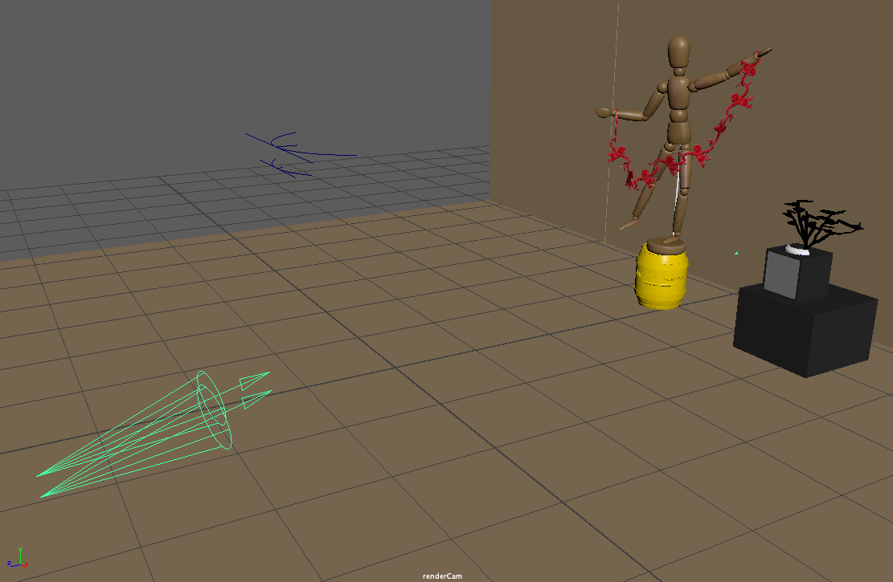

October 21, 2019 -- For this second project, I am recreating a scene from a 2D picture as accurately as I can by creating the models, adding shaders, textures, and lightining. The picture shown above is the scence that I chose. Picture Source
Components
This scene has some individual components. The major models that needs to be made are the mannequin, the barrel monkeys and their barrel, and the tree. There's two more boxes but those are created by using just a single cube for each.
Mannequin
Modeling: I used mostly spheres to create the mannequin. Creating the joints (elbows, wrists, ankles, knees, hips, and shoulders), neck, and abdomens are just plain sphere in varying sizes. The rest required more modification, such as pulling to elongate and flatten the bottom for the head, almost the same for the torso. The waist needed to be flatten from both top and bottom. The forearms, arms, legs, and shins took all similar procedures from a cylinder that I added some edge loops to create softened ends and some more edge loops to added a widened body that tapers.
Shading and Texturing:
To shade the main mannequin, I used a phong to give a little bit of reflectivity. I also added a wood texture file for the color. I had to fix most of the UVs and set most of them as planar because automatic UVs cuts the UVs in weird areas.
For the pole that connects the mannequin to the block I used a blinn with a light grey color
Barrel Monkey
Modeling: For the barrel monkeys, I used the texture as a reference image. I started the body with a cylinder, scaled down in an axis to flatten. Then, scaled on another axis for the width of the body and on another for the length of the body. After that, I added edge loops to allow me to extrude the faces for the arms, legs, and face. I repeatedly extruded the faces and adjusting the transformation to closely resemble the reference.

Shading and Texturing:
To texture the barrel monkeys, I used the same reference image I used on creating them as the file for color. I also added fractal bumps on it.
The side edges did not have any texture in the begin so I just added a red blinn that is close to the reds in the monkey texture.
Barrel
Modeling: I created the barrel using a cylinder, then added edge loops, and adjusted each edge to add wideness at some parts. Then, I duplicated this, extruded the faces for the bands and deleted the rest. I combined those bands with the main barrel. For the letters, I used the type tool and added a nonlinear bend deform. For the "underline" under the text, I created a cylinder and added a nonlinear bend deform.

Shading and Texturing:
To create a texture for the barrel. I just added a yellow color to a phong, and added a fractal bump.
Tree
Modeling: To create the tree, I started the same way as the monkeys. Then I just added edge loops and extruded the faces. I just randomly kept extruding for the branches then the leaves
Shading and Texturing:
For the tree, I just used a simple blinn
Two Cubes
For the two cubes, I just created a simple cube. For the cube that was above the other, I extruded the face in front and scaled it so it can be have different shader and texture.
Wall and Floor
For the wall and floor, I created a cube that were enlarged in two axes and scaled down on one to flatten. I added a simple brown lambert.
On the wall, I added two creases using a really long cube and used boolean to create an intersection.
Scene with Default Lighting

Lighting
For the lighting, I have three spotlights. Two of them are set to project a red light, placed in almost the same position just offset a little bit. I adjusted the cone and penumbra angles to closely resemble the reference.

For the last lightining, I scaled this down, set it to project a yellow light. I tried to place it as close as possible to the tree to depict the same shadow in the reference, however, the shadow disappears when the spotlight gets too close to the tree.
All of the spotlights are given an Arnold exposure of 5 so that it can be seen when rendering in Arnold.
Final Outcome
Original Perspective
Top Perspective
Left Perspective
Right Perspective
 Download project files here:
Download project files here:
.jpg){kind=link}